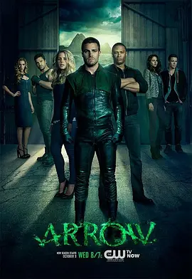

7.6
绿箭侠 第二季
Arrow Season 2
2013
美国
评分 7.6
导演:
约翰·贝林 / 格伦·温特 / 盖伊·诺曼·比
演员:
斯蒂芬·阿梅尔 / 大卫·莱姆希 / 艾米莉·贝特·理查兹 / 凯蒂·卡西迪 / 凯蒂·洛茨
类型:
冒险,动作,犯罪
剧情简介
城市在经历上一季的巨变后，仍笼罩在不安的阴影里。Oliver Queen 再次回到钢筋丛林，他放下了先前的暴戾手段，却依然保持着夜行者的警觉。他在废弃厂房中训练、在昏暗屋顶观察街区的呼吸节奏，努力让“绿箭”成为真正能维系正义的象征，而不是简单的复仇化身。新一季的威胁来得更为隐秘。街头不再只是散乱的犯罪分子，而是逐渐浮现出组织化的暗流，它们藏在城市的裂缝间，用冷静精准的方式掀起骚动。Oliver 在应对的过程中，也开始倚重团队的力量。Felicity 的技术支援让行动更加敏捷，Diggle 的稳重判断始终压住危险边缘的冲动，他们在夜里交换简短的指令、共享监控光点，形成了新的默契。另一方面，Laurel 的变化同样牵动着城市节奏。她在法庭上直面权势，在黑夜中揭露真实的愤怒，每一次选择都让她离危险更近一步。她与 Oliver 的关系时远时近，既有旧日的信任，也有无法跨越的裂痕。而一位突然出现的神秘女性——Black Canary 的身影，在夜风中锐利而孤独。她的出现如同引线，点燃了更深层的冲突。暗处的敌人步步逼近，他们熟悉 Oliver 的弱点、熟悉他的过去，也清楚他的原则。城市在一场看不见的较量中被推向紧绷的边缘，Oliver 只能不断在家人的期待、朋友的信任与城市的重压之间寻找平衡。当夜色再次落下，他必须决定成为何种意义上的“英雄”。